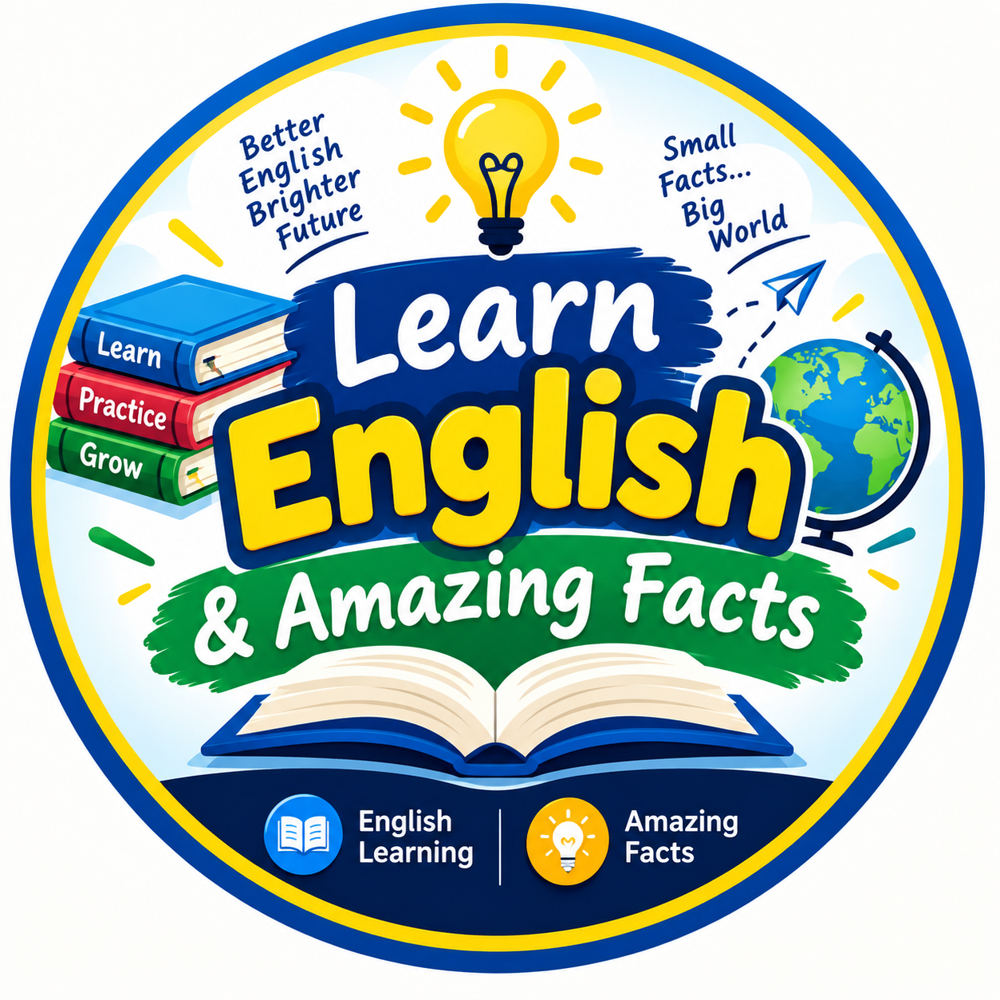

📖 English Grammar
Learn articles, pronouns, prepositions, verbs and tenses with simple rules and examples.

Learn • Practise • Quiz • Discover
Welcome! Learn English grammar step by step, practise spoken English, improve vocabulary and test yourself with interactive quizzes. Explore mathematics, science, general knowledge and amazing facts. Choose a lesson to learn, then try a quiz to practise.
Learn articles, pronouns, prepositions, verbs and tenses with simple rules and examples.
Practise everyday English sentences with Bengali meanings and useful conversations.
Learn common words, synonyms, antonyms and example sentences.
Choose a topic below and answer the questions. Your score appears at the end.